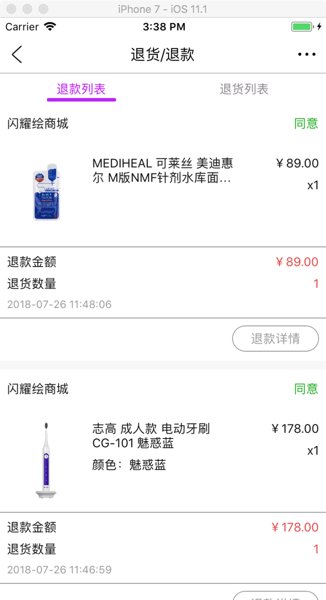

LQSMenuScrollPageView、LQSViewTemplateCollectionItem 实践
退货、退款
SYH__ReturnRefundController
基于 LQSHeadViewController 类。
加载了 SYH__ReturnRefundView 的实例对象。
SYH__ReturnRefundView
基于 LQSView 类。
用来实现 LQSMenuScrollPageView 实例对象。
SYH__RefundView
基于 LQSViewTemplateCollectionItem 类。
在当前类里面实现请求数据逻辑，以及获取数据后转换成 LQSCollectionSectionItem类 对象。
从而让 LQSViewTemplateCollectionItem类识别。
SYH__ReturnRefundController
#import "SYH__ReturnRefundController.h"
#import "SYH__ReturnRefundView.h"
@interface SYH__ReturnRefundController ()
@property(nonatomic,strong) SYH__ReturnRefundView* myView;
@end
@implementation SYH__ReturnRefundController
- (void)viewDidLoad {
[super viewDidLoad];
// Do any additional setup after loading the view.
self.headTitle = @"退货/退款";
SYH__ReturnRefundView* temp = [SYH__ReturnRefundView new];
[self setupBodyView:temp];
self.myView = temp;
}
@end
SYH__ReturnRefundView
#import "SYH__ReturnRefundView.h"
#import "SYH__RefundView.h"
#import "SYH__ReturnView.h"
@interface SYH__ReturnRefundView ()<LQSMenuScrollPageViewSource,LQSMenuScrollPageViewDelegate>
@property(nonatomic,strong) NSArray* array;
@property(nonatomic,strong) LQSMenuScrollPageView* menuScrollPageView;
@end
@implementation SYH__ReturnRefundView
- (void) initializeWithView {
[super initializeWithView];
self.array = @[@{@"name": @"退款列表",@"viewClass":@"SYH__RefundView"},
@{@"name": @"退货列表",@"viewClass":@"SYH__ReturnView"}];
LQSMenuScrollPageView* menuScrollPageView = [LQSMenuScrollPageView new];
menuScrollPageView.menu.style = LQSMenuStyleAverageDefault;
menuScrollPageView.menu.buttonTextSelectedColor = @"#BE00FA";
menuScrollPageView.dataSource = self;
menuScrollPageView.delegate = self;
menuScrollPageView.menu.scrollLineWidth = 50;
[self setupBodyView:menuScrollPageView];
self.menuScrollPageView = menuScrollPageView;
}
#pragma mark - LQSMenuScrollPageViewSource
- (NSUInteger) numberOfViewsInLQSMenuScrollPageView:(LQSMenuScrollPageView *)view {
if ([self.array isKindOfClass:[NSArray class]]) {
return [self.array count];
}
return 0;
}
- (NSString*) lqsMenuScrollPageView:(LQSMenuScrollPageView *)view textOfMenuAtIndex:(NSUInteger)index {
NSString* text = nil;
NSDictionary* dictionary = [self.array objectAtIndex:index];
if ([dictionary isKindOfClass:[NSDictionary class]]) {
text = [dictionary objectForKey:@"name"];
}
return text;
}
- (UIView*) lqsMenuScrollPageView:(LQSMenuScrollPageView *)view viewOfScrollPageAtIndex:(NSUInteger)index {
NSString* classString = nil;
NSDictionary* dictionary = [self.array objectAtIndex:index];
if ([dictionary isKindOfClass:[NSDictionary class]]) {
classString = [dictionary objectForKey:@"viewClass"];
Class tempClass = NSClassFromString(classString);
if (tempClass) {
return [tempClass new];
}
}
return nil;
}
@end
SYH__RefundView
#import "SYH__RefundView.h"
#import "MemberRefund__GetRefundListRequest.h"
#import "SYH__RefundViewCollectionCell.h"
#import "SYH__RefundViewCollectionHeader.h"
#import "SYH__RefundViewCollectionFooter.h"
#import "SYH__ReturnRefundDetailsController.h"
@interface SYH__RefundView ()<LQSRequestImplementDelegate>
@property(nonatomic,strong) NSMutableArray* keepArray;
@end
@implementation SYH__RefundView
- (void) initializeWithView {
[super initializeWithView];
self.lqs__backgroundColor = @"#f7f7f7";
self.keepArray = [NSMutableArray array];
//请求
[self requestAction];
}
- (void) requestAction {
MemberRefund__GetRefundListRequest* request = [MemberRefund__GetRefundListRequest requestWithDelegate:self];
[request requestWithCurpage:@"1"];
}
#pragma mark - LQSRequestImplementDelegate
- (void) lqsRequestImplement:(LQSRequestImplement *)request error:(NSError *)error {
NSLog(@"%s error %@",__func__,error);
}
- (void) lqsRequestImplement:(LQSRequestImplement *)request success:(id)result {
}
- (void) lqsRequestImplement:(LQSRequestImplement *)request successWithDictionary:(NSDictionary *)result code200ForDatasDcitionary:(NSDictionary *)datas {
if ([datas lqs__isNSDictionary]) {
NSArray* refund_list = [datas objectForKey:@"refund_list"];
if ([refund_list lqs__isNSArray]) {
[self.keepArray addObjectsFromArray:refund_list];
}
}
[self sdasdasdad];
}
- (void) sdasdasdad {
NSMutableArray* keepArray = [NSMutableArray array];
for (NSDictionary* dictionary in self.keepArray) {
if ([dictionary lqs__isNSDictionary]) {
NSArray* goods_list = [dictionary objectForKey:@"goods_list"];
if ([goods_list lqs__isNSArray] == NO) {
goods_list = [NSArray array];
}
LQSCollectionSectionItem* item = [LQSCollectionSectionItem new];
item.dataSourceDictionary = dictionary;
[item setupHeaderWithClass:[SYH__RefundViewCollectionHeader class] height:44];
[item setupFooterWithClass:[SYH__RefundViewCollectionFooter class] height:130];
[item setupCellWithClass:[SYH__RefundViewCollectionCell class] array:goods_list height:120];
[keepArray addObject:item];
[keepArray addObject:[LQSCollectionSectionItem gap:10]];
}
}
self.collectionDataSource = keepArray;
}
#pragma mark -
- (void) collectionManager:(LQSCollectionView*)manager cell:(LQSBasicCollectionViewCell*)cell forItem:(LQSCollectionSectionItem*)item atIndexPath:(NSIndexPath *)indexPath {
}
- (void) collectionManager:(LQSCollectionView*)manager header:(LQSBasicCollectionReusableView*)header forItem:(LQSCollectionSectionItem*)item atIndexPath:(NSIndexPath *)indexPath {
[header setupWithDictionary:item.dataSourceDictionary];
}
- (void) collectionManager:(LQSCollectionView*)manager footer:(LQSBasicCollectionReusableView *)footer forItem:(LQSCollectionSectionItem *)item atIndexPath:(NSIndexPath *)indexPath {
[footer setupWithDictionary:item.dataSourceDictionary];
}
- (void) collectionManager:(LQSCollectionView *)manager didSelectItem:(LQSCollectionSectionItem *)item atIndexPath:(NSIndexPath *)indexPath {
if ([item.dataSourceDictionary lqs__isNSDictionary]) {
NSString* refund_id = [item.dataSourceDictionary lqs__toStringWithObjectForKey:@"refund_id"];
SYH__ReturnRefundDetailsController* controller = [SYH__ReturnRefundDetailsController new];
controller.return_id = refund_id;
[self lqs__currentNavigationControllerPushViewController:controller];
}
}
@end
效果图
